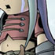
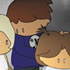

creative stuff
Herein dwells examples of the works of you talented
noise
and THE
PROGRAM
bods, with links to artist profiles and more info about the artists themselves. Onya punters.
Displaying page 1 of 1, containing 1-12 of 12 found items.
Pic //
Name //
In Brief //

Depressed Zoe
Well, how would -you- be if you dropped your ice-cream, huh? Huh?
MYSTIC
the rebelious child of the mystic realm just wants to be human.
battle of the clones
the idea of clonning is no longer a
blues
Collingwood night
hey you
the colours of life, photographic portrait.
scooping the monkey
This was a banner I designed for a web competition.
nerd rock photo: The Jocks
This is a promotional photo for my as yet unmade animation.

nerd rock high photo: 'The girls
This is the second of two studio shots.
Wes Borland (Fan Art)
This is an early work of Limp Bizkit guitarist Wes Borland....
TWINS ON THE RUN
This is a work done in pencil
Psychotic Zoe
Zoe likes running with sharp objects.
A bullet for you...
Just an ambiguous drawing.
status //
Guest. You may
Register
or
Log In
.
Australian Central Standard Time (GMT +09:30) //
11:00 PM, Sat, 5 Mar, 2005.